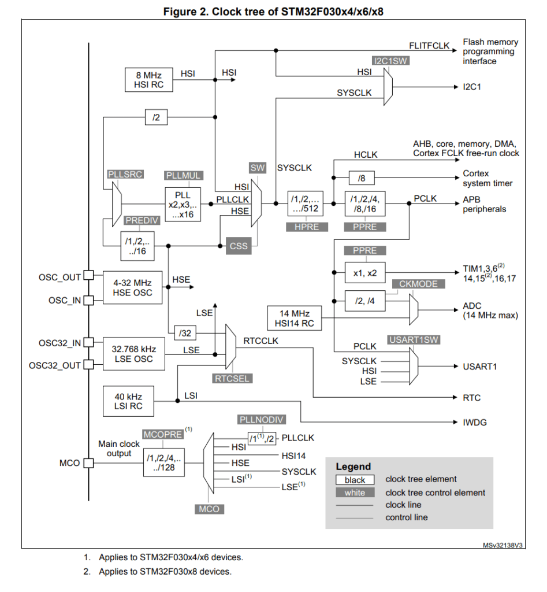

“The time has come,” the walrus said, “to talk of many things: Of baud rates - and clocks - and quartz.”One thing to consider in any kind of transmission is the speed, how fast or how slowly you can transmit data. I have configured USART1 at 9600 baud, keeping the other settings at default value (8N1), so how fast is that?
-- Les huit scaroles --
The thing is, I didn't program USART1 to transmit at 9600 baud. As my default clock is 8MHz, I had to write in USART1 baud rate register a value close to 8000000/9600 or 2500/3, 833 is close enough but my actual transmission speed is closer to 9604, slightly faster than 9600 baud.
The error is small (4/10000) and the transmission works fine. Still common baud rates are 300, 1200, 2400, 9600, 19200, 38400, 57600, 115200. It would be better if my clock frequency was 6MHz or 12MHz if I want to work at higher baud rate.

The default configuration I have been using so far goes like this.
The PLL output frequency must be in the range 16-48 MHz. As I am looking for a frequency that can be divided by 3 to match most of the baud rate, I will use 24 MHz.
To set a 24 MHz clock with a 8 MHz High Speed External Oscillator (HSE):
I expand the board description part by adding HSE,
PLL and BAUD macro definitions. Based on those I can
handle four clock configurations: HSI, HSE, PLL HSI and PLL HSE.
/* user LED ON when PA4 is high */ #define LED_IOP A #define LED_PIN 4 #define LED_ON 1 /* 8MHz quartz, configure PLL at 24MHz */ #define HSE 8000000 #define PLL 6 #define BAUD 9600 #ifdef PLL # ifdef HSE # define CLOCK HSE / 2 * PLL # else /* HSI */ # define CLOCK 8000000 / 2 * PLL # endif # if CLOCK < 16000000 # error PLL output below 16MHz # endif #else # ifdef HSE # define CLOCK HSE # else /* HSI */ # define CLOCK 8000000 # endif #endifAt compilation time there will be a check if the clock targeted is in the supported range of the chipset and a warning given if the baud rate generation is not accurate.
#if CLOCK > 48000000 # error clock frequency exceeds 48MHz #endif #if CLOCK % BAUD # warning baud rate not accurate at that clock frequency #endifI expand the definition of the Reset and Clock Control (RCC) peripheral to add the necessary bit fields.
#define CAT( a, b) a##b #define HEXA( a) CAT( 0x, a) #define RCC ((volatile long *) 0x40021000) #define RCC_CR RCC[ 0] #define RCC_CR_HSION 0x00000001 /* 1: Internal High Speed clock enable */ #define RCC_CR_HSEON 0x00010000 /* 16: External High Speed clock enable */ #define RCC_CR_HSERDY 0x00020000 /* 17: External High Speed clock ready flag$ #define RCC_CR_PLLON 0x01000000 /* 24: PLL enable */ #define RCC_CR_PLLRDY 0x02000000 /* 25: PLL clock ready flag */ #define RCC_CFGR RCC[ 1] #define RCC_CFGR_SW_MSK 0x00000003 /* 1-0: System clock SWitch Mask */ #define RCC_CFGR_SW_HSE 0x00000001 /* 1-0: Switch to HSE as system clock */ #define RCC_CFGR_SW_PLL 0x00000002 /* 1-0: Switch to PLL as system clock */ #define RCC_CFGR_SWS_MSK 0x0000000C /* 3-2: System clock SWitch Status Mask$ #define RCC_CFGR_SWS_HSE 0x00000004 /* 3-2: HSE used as system clock */ #define RCC_CFGR_SWS_PLL 0x00000008 /* 3-2: PLL used as system clock */ #define RCC_CFGR_PLLSRC 0x00010000 #define RCC_CFGR_PLLSRC_HSI 0x00000000 /* HSI / 2 */ #define RCC_CFGR_PLLSRC_HSE 0x00010000 /* HSE */ #define RCC_CFGR_PLLXTPRE 0x00020000 #define RCC_CFGR_PLLXTPRE_DIV1 0x00000000 /* HSE */ #define RCC_CFGR_PLLXTPRE_DIV2 0x00020000 /* HSE / 2 */ #define RCC_CFGR_PLLMUL_MSK (0x00F << 18) #define RCC_CFGR_PLLMUL( v) ((v - 2) << 18) #define RCC_AHBENR RCC[ 5] #define RCC_AHBENR_IOP( h) (1 << (17 + HEXA( h) - 0xA)) #define RCC_APB2ENR RCC[ 6] #define RCC_APB2ENR_USART1EN 0x00004000 /* 14: USART1 clock enable */The code to configure the clocks follow the steps I have described before. The conditional compilation allows the generation of the four possible cases: HSI, HSE, PLL HSI and PLL HSE.
/* By default SYSCLK == HSI [8MHZ] */
#ifdef HSE
/* Start HSE clock (8 MHz external oscillator) */
RCC_CR |= RCC_CR_HSEON ;
/* Wait for oscillator to stabilize */
do {} while( (RCC_CR & RCC_CR_HSERDY) == 0) ;
#endif
#ifdef PLL
/* Setup PLL HSx/2 * 6 [24MHz] */
/* Default 0: PLL HSI/2 src, PLL MULL * 2 */
# ifdef HSE
RCC_CFGR = RCC_CFGR_PLLSRC_HSE | RCC_CFGR_PLLXTPRE_DIV2 ;
# endif
RCC_CFGR |= RCC_CFGR_PLLMUL( PLL) ;
RCC_CR |= RCC_CR_PLLON ;
do {} while( (RCC_CR & RCC_CR_PLLRDY) == 0) ; /* Wait for PLL */
/* Switch to PLL as system clock SYSCLK == PLL [24MHz] */
RCC_CFGR = (RCC_CFGR & ~RCC_CFGR_SW_MSK) | RCC_CFGR_SW_PLL ;
do {} while( (RCC_CFGR & RCC_CFGR_SWS_MSK) != RCC_CFGR_SWS_PLL) ;
#else
# ifdef HSE
/* Switch to HSE as system clock SYSCLK == HSE [8MHz] */
RCC_CFGR = (RCC_CFGR & ~RCC_CFGR_SW_MSK) | RCC_CFGR_SW_HSE ;
do {} while( (RCC_CFGR & RCC_CFGR_SWS_MSK) != RCC_CFGR_SWS_HSE) ;
# endif
#endif
#ifdef HSE
/* Switch off HSI */
RCC_CR &= ~RCC_CR_HSION ;
#endif
Systick reload value is calculated based on CLOCK constant value.
SYSTICK_RVR = CLOCK / 8 - 1 ; /* HBA / 8 */
Similarly, USART1 baud rate register is calculated based on CLOCK
and BAUD constant value.
USART1[ BRR] = CLOCK / BAUD ; /* PCLK is default source */
I add a debug print at the end of init() to display which clock
configuration has been set.
kputs(
#ifdef PLL
"PLL"
#endif
#ifdef HSE
"HSE"
#else
"HSI"
#endif
"\n") ;
SRCS = startup.c clocks.c uptime.cBuild complete successfully, this is for PLL HSE board configuration.
$ make f030f4.elf from startup.o clocks.o uptime.o text data bss dec hex filename 1433 0 8 1441 5a1 f030f4.elf f030f4.hex f030f4.binI use a board with a 8 MHz quartz soldered on and test the four clock configuration.
Next, I will implement interrupt driven transmission.